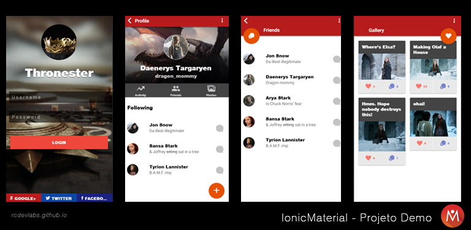
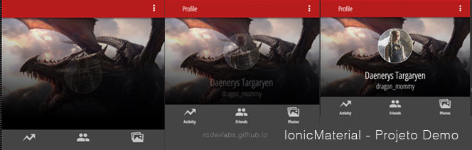
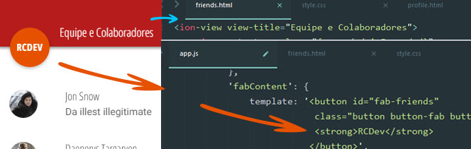
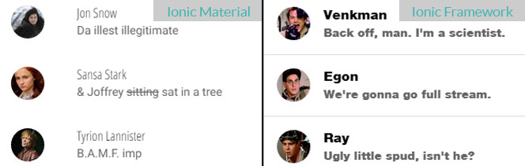

O Ionic Framework é uma das soluções preferidas dos caras legais para projetos de Apps Híbridos ou multi-dispositivos.
Outro que tá suuuper na moda também é o tal do Material Design. Hoje, teremos um mix dos dois, com Ionic Material!
Vamos juntos passear por um demo muito bacana do Ionic Material e entender como utilizar esse cara que parece tão promissor!
Neste artigo, passearemos juntos pelo código do projeto Demo, prestando atenção especial à alguns itens básicos que nos farão entender o funcionamento e proposta do Ionic Material.
Material Design: O que é, de onde veio, para que serve?
Aqueeeeele design concept muito louco do Google que tem a a pequena pretensão de guiar a próxima geração de User Interfaces de Apps Móveis parece estar agradando, e ganhando adeptos em vários segmentos.
Foi anunciada em Junho de 2014, na Google I/O e poderia ser utilizada em dispositivos com Android lançados após 2009, com uso da v7 app compat library, existente nos aparelhos lançados desde aquele ano.
Criada pelo Design team do Google, teve Matias Duarte como Lead Designer e mentor do projeto.
Ionic Framework: O que faz, como faz e para que faz?
Lançado em 2013, é um dos Frameworks mais populares para desenvolvimento de Aplicativos Móveis híbridos. Com a missão de integrar-se ao máximo com a plataforma nativa, busca sempre o native-feel.
Utiliza AngularJs como framework principal para tratamento dos dados, o que permite utilizar-se de aceleração por Hardware, ao invés de manipulação do DOM direta.
Além disso, o CSS é pensado e cuidado para melhor desempenho móvel. Ao final, utiliza-se do Phonegap/Cordova para empacotar a aplicação, seja para iOS, Android ou WindowsPhone.
Além das bibliotecas css e javascript do Ionic para o desenvolvimento, contamos também o uma cli interface de linha de comando muito bacana e útil.
Ele nos oferece ferramentas para publicação, teste, criação de icones e splash screens, push notifications e muito mais, atravéz da sua linha de comando.
Pra instalar o Ionic Framework é necessário ter o NodeJs e executar os comando npm install -g cordova, depois npm install -g ionic.
Mãos à obra: Usando o Ionic Material
O Ionic Material está disponível no site oficial, atualmente em versão pré-release.
Depois você pode curtir o site e exemplos nele disponíveis, mas, agora, clique em Download para baixar o source
Dentro do arquivo .zip, vamos abrir a pasta ionic-material-master/demo.
Extraia o conteúdo dela para uma pasta onde iremos trabalhar.
Acesse a pasta para onde extraiu o conteúdo da ionic-material-master/demo.
Com o terminal, nela, vamos instalar as dependencias com o npm1
$ npm install
Agora, rodamos o servidor do ionic com o ionic serve
1 | $ ionic serve |
Após alguns segundos, o Ionic deve abrir o servidor de desenvolvimento na url http://localhost:8100/.
Caso abra a página em branco, com erro no Console, é por que a versão do demo do Ionic Material estava com problema (até hoje 26-06-2015).
Pra resolver é bem fácil: Extraia o conteúdo da pasta /dist do arquivo Ionic-Material-master.zip para exemplo-ionic-material/lib/ionic-material no seu projeto.
Isso deve, automagicamente, recarregar a página - desta vez com tudo em ordem:

Analisando o Código do Ionic Material
Bom, o Ionic Material ainda está em fase de pré-lançamento. Imagino que tenham lançado para não perder o timing, já que Material Design tá suuuuper na moda.
Mas, independente da usabilidade do framework, a questão é que não há documentação no momento.
Por isso é tão importante o projeto demo, para que tenhamos acesso à um pouco do código.
Vou listar abaixo algumas diretivas e classes que achei interessantes ao experimentar este demo.
Custom CSS e Mudando a fonte padrão do Ionic Material
Bom, para todos os efeitos, temos um projeto Ionic normal, que conta com as funcionalidades adicionais do Ionic Material.
Vamos conferir isso, alterando a fonte padrão do App.
Edite o arquivo exemplo-ionic-material/www/css/style.css, adicionando o seguinte:
1 | @import url(http://fonts.googleapis.com/css?family=Open+Sans+Condensed:300,700); |
Salve. O LiveReload do Ionic já deve carregar a fonte nova no app.
Note que o CSS do Ionic é bastante específico em algumas partes, e que as alterações na fonte das Tabs, por exemplo, precisariam da classe .tab-item.
Vamos alterar a fonte da tab e dos itens do menu:
1 | (...) |
Até aí, nada novo. Fariamos isso (ou quase :P) com um app Ionic Framework normalmente.
Vamos para um elemento mais ‘específico’ do material design: o Hero Header, com sua animação elegante e fade-in rotativo da imagem de perfil:
Hero e animação de transição do Ionic Material
O fundo que surge progressivamente e sua transição característica do Material Design - normalmente após interagir com um Card - está no projeto demo:

Editando o arquivo exemplo-ionic-material/www/templates/profile.html, notamos o trecho abaixo:
1 | <div class="hero slide-up" style="background-image: url('img/profile-bg.jpg');"> |
De cara, já não gostei de definir o background-image inline. Mas tudo bem, neste vasto mundo de App Móveis, usar estilos inline as vezes não é um pecado mortal.
Aposto que logo teremos a opção de adicionar a imagem via diretiva.
Achei bacana que se vc inserir o snippet acima em outra parte do seu app, o efeito é o mesmo.
Inclusive, funciona para mais de um elemento por página, sem necessariamente que o elemento seja o cabeçalho da tela atual.
Botão característico da View do Ionic Material
O botão abaixo é um dos pontos mais marcantes dos specs do Material Design.
Além da transição característica ao aparecer na página, ele também responde e reage à posição do toque com seu background!
No Ionic Material utiliza-se uma abordagem bastante interessante, IMHO, pra lidar com esse botãozinho tão especial:
Os botões fabContent são definidos com os States da aplicação, e podem ser adicionados como uma view do estado, levando os parâmetros: template, uma string, e controller, uma função.
Saca só que maneirinho:
No exemplo abaixo, do estado app.friends, carregamos a view fabContent, cujo template é o HTML do botão, (e suas classes) e controller uma function de $timeout, responsável por adicionar a classe .on após 900ms em nosso botão, finalizando o efeito transitório:
1 | .state('app.friends', { |
Para editar o botão redondinho do Material Design no Ionic Material, basta editar o view fabContent, alterado o
templatena declaração do State() da tela desejada.
As classes para o botão fabContent são: .button-fab-top-right, .button-fab-top-left, button-fab-bottom-right e .button-fab-bottom left. Elas controlam a posição, sendo superior direito, esquerdo e inferior direito e esquerdo respectivamente.
[Demonstrando como controlar o conteúdo do botão Material no app.js, e editar o texto do Title da View no friends.html]
Input e Labels do Material Design com Ionic Material
Logo na tela de Login temos um exemplo de form com Material Design style :)
Para utilizar o elemento, chamado input-md, é bem simples. Basta inserir na view:
1 | <div class="list"> |
Meio triste, porém, que para utilizar esses inputs, é necessário injetar ionMdInput (além do ionic-material, claro) nas dependencias do app:
1 | ... |
e inserir o script e o css: ion-md-input.min.js e ion-md-input.min.css
Itens e outras classes CSS do Ionic
Uma das vantagens do Ionic Material é que ele extende as classes originais do Ionic Framework. Isso quer dizer que, exceto alguns elementos específicos, a maioria dos elementos oferecidos originalmente já estão preparados para o Material Design.
Veja no exemplo abaixo o elemento Item, inserido usando a classe .item

1 | <div class="list animate-fade-slide-in-right"> |
Bom, os principais benefícios do framework, segundo seus criadores são:
- Interact for ink effects (Interação para efeitos de tinta)
- Extends Ionic classes (Extende as classes do Ionic)
- Integrates with directives (Integra com as diretivas)
- Fully themeable (Preparado para customizar o tema)
Isso significa que a curva de aprendizado deve ser quase nula, bastando sacar algumas diretivas e classes adicionais, porém esperando que os elementos já utilizados normalmente em projetos Ionic sejam adaptados automaticamente para o Material Design.
Noffa Romulo, que legal, então posso sair usando em meus projetos?
Fico feliz que vc tenha perguntado :)
Eu gostei bastante da proposta e resultado do Ionic Material.
Isso, porém, não é o suficiente para que eu o indique - por enquanto.
Acho que o projeto ainda está um tanto crú, e foi lançado um pouco antecipadamente por jogada de posicionamento no mercado:
Se esperassem mais, ia acabar surgindo outro.
O futuro, porém, parece bastante promissor. Imagino que nas próximas semanas deva sair uma versão mais estável e que permita trabalhar com mais confiança no Ionic Material.
Por enquanto, #ficaADica para quem quiser ou precisar usar Material Design em seus projetos de apps Híbridos: Independente da versão, o Ionic Material é bastante fácil de implementar e utilizar.
Herda as classes existentes, e disponibiliza o diferencial para que possamos utilizar os specs - segundo eles, cuidadosamente seguidos - do Google para a tendência do Material Design.
Comments